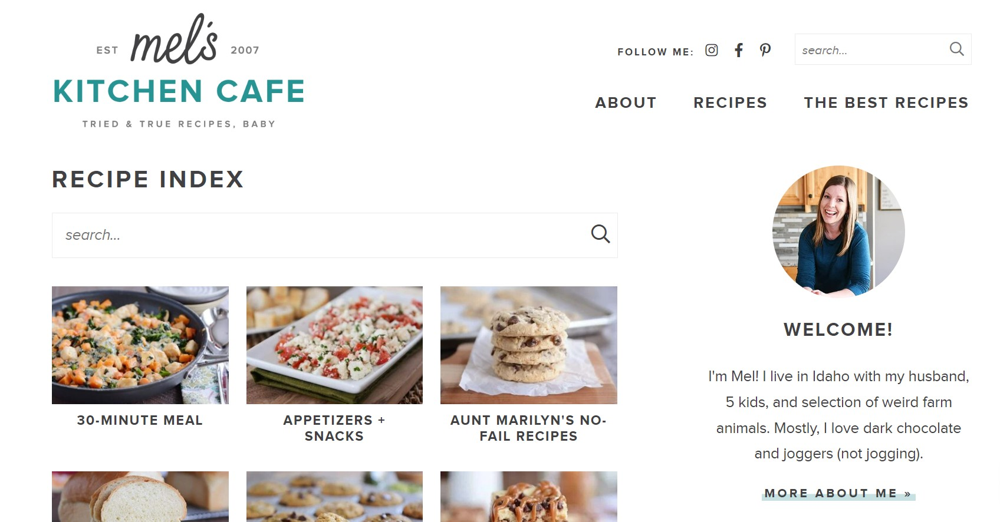
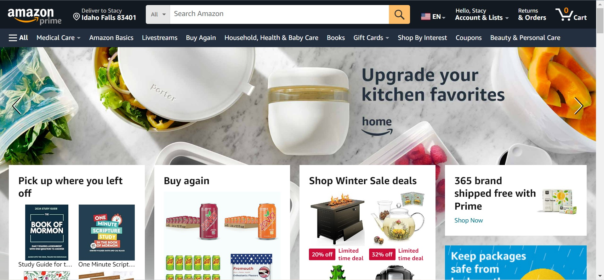
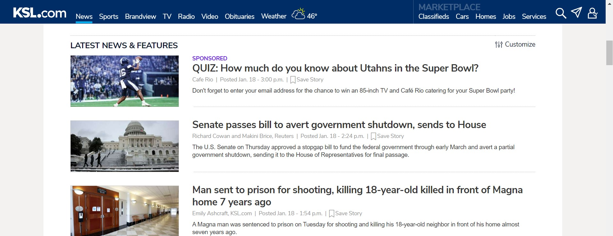

White Space
Mels Kitchen Cafe
melskitchencafe.com The recipe website melskitchencafe.com does a great job of using whitespace to show the images of food that she has recipes for. Her website is clean and easy to navigate. The white space helps the viewer be able to focus in on the recipes.
Rule of Thirds
Amazon.com
amazon.com Amazon.com is good at using the Rule of Thirds. They make it so that their website is balanced on both sides. The website has items across the page so that it isn't uneven.
Contrast
KSL News
ksl.com KSL is good at using contrast on their website so that the viewer can see the news articles. The blue against the white on the menu stands out. The news articles also contrast against the white background so that the viewer can see the articles clearly.